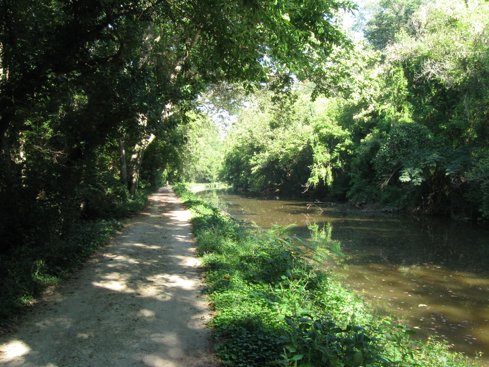
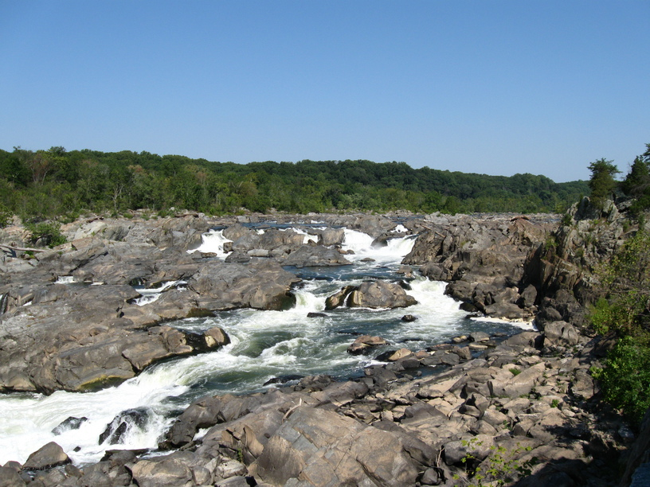
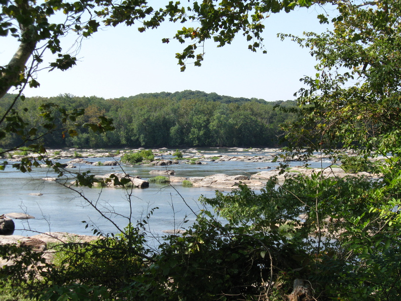
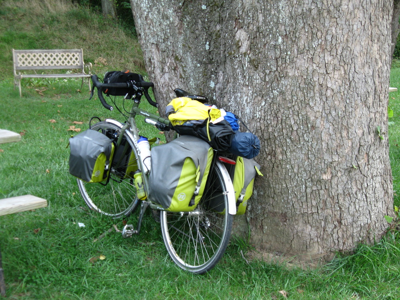
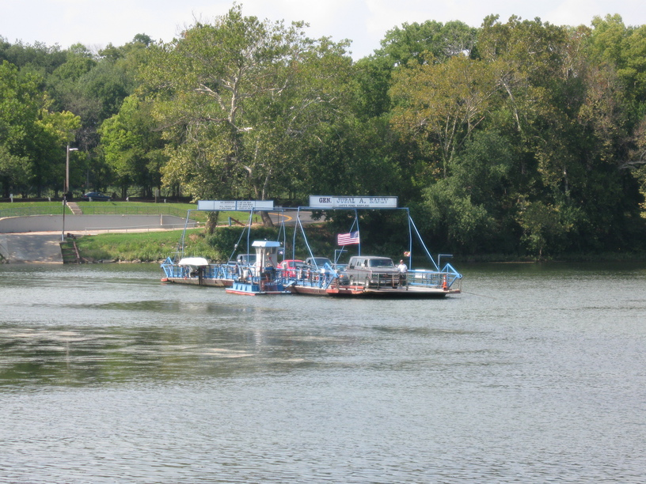
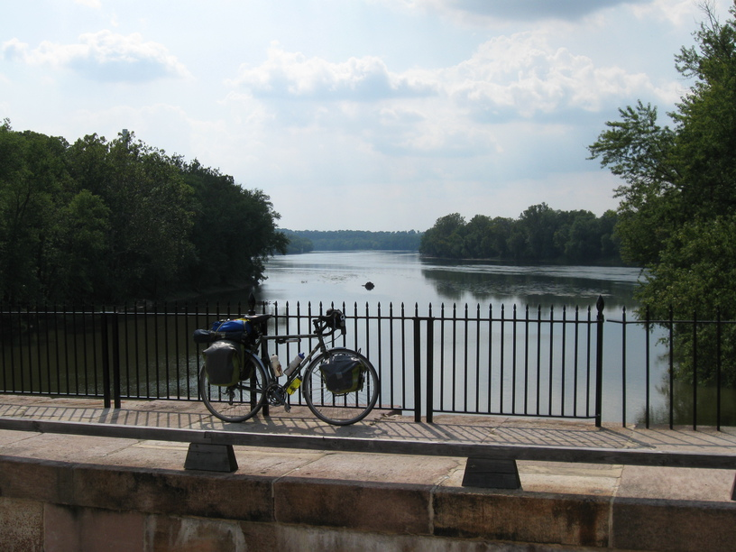

18 Sep 08, Harper's Ferry, MD
Day 2 was people day. Boring things: falling off bike, losing gloves, buying new gloves, riding to my goal destination. Not boring things: chatting with a triathlete about riding the C&O and GAP--and Ride The Rockies--talking with a canal bike patrol volunteer on the Monocacy Aqueduct, and sharing a campsite with four very friendly riders--David, Jim, Carl and Jack--and a group of seven BCPSS students with two of their teachers. The students attend the Independence School and go on outdoors trips as part of their curriculum.
The four other riders were the nicest guys. When I rode into camp, they were interested in my bike, and were asking me all about it. In looking over the bike, Jim noticed that I had some loose screws on my rack. He proceeded to open his toolkit & go to town ensuring that all my important bolts were tight, and straightening my rear rack.
I definitely did a good job slowing down & talking to people today. I think it's the best way to travel.





